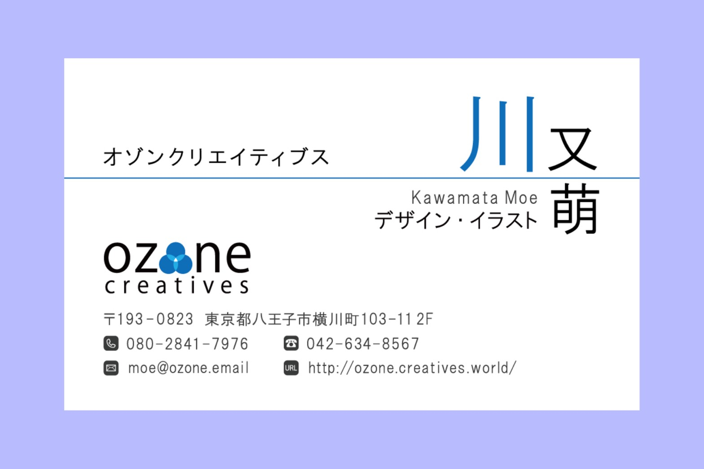

・ わたしについて ・
#MK
山形県新庄市出身。Webデザイナー志望。東京工科大学を中退し、独学でプログラミングを勉強中。
占い・心理テスト、お絵かきが趣味。
特技は食べることとちょこっと料理。好きな食べ物は肉、得意料理はオムライス。
more人との繋がりを大切にし、クライアントに寄り添った仕事をすることを心掛けています。
見知らぬ人の新しい価値観を取り入れ、生かすことが得意です。
臨機応変に対応しながら、より良いものを生み出そうと努力することが出来ます。
また、地域のイベントやボランティア活動に参加することが好きです。
大学在学中に映像制作・ビジュアルプログラミング（vvvv・Touch designer）・3DCG・デザインに触れました。
小学校から高校までは女子バレー部で9年間プレーヤーとしてバレーボールを楽しみました。
大学では写真部と美術部に所属し、作品制作に努め...てはいませんでしたが、部活動やオープンキャンパスを通してOB・OGの方々と積極的に関わることで、自分の世界を広げることが出来ました！
close
・ できること ・
| 写真 | 撮影・編集 | 1年半 |
|---|---|---|
| Adobe Illustrator | サイトデザイン・名刺作成 | 半年 |
| プログラミング | サイト制作（HTML/CSS/jQuery/PHP） | 半年 |
| 運転 | 普通自動車（AT限定） | 半年 |
| イラスト作成 | アイコン・バナー | 趣味程度 |
| スポーツ | バレーボール・スキー・スノーボード・水泳 | 下手の横好き |
・ つくったもの ・
デザイン
サイトデザイン/LocalStyle/3ヶ月
八王子に店舗を構える名店の商品を取り扱うショッピングサイトです。ロゴ、画面モックを担当しました。『たくさんの人に親しんで利用してもらえる、名店の品を取り扱うショッピングサイト』をコンセプトに、20~60代まで幅広い年代の方が利用しやすいデザイン、親しみやすい色づかいを意識して制作しました。また、八王子以外の地域のサイトにも利用しやすいように考案しました。
名刺/ozone creatives/1ヶ月
所属していたデザイン団体の名刺です。指定されたロゴを使用し、オゾンの色である淡い青色をキーカラーとしてデザインしました。メンバーがとても自由な人たちなので、『個性的で楽しいデザイン団体』をコンセプトに作成しました。文字の並びや大きさなどに拘りました。しかし、名刺管理アプリなどでスキャンしてデータ化するのは難しいです（笑）
写真・イラスト
キイロ/山形/2018

暮らし/東京/2017

夢中
・ おといあわせ ・
気になることがあれば、お気軽にご連絡ください。
メールアドレス : uni.13@gmail.com